Префектура Исикава · Канадзава · лёд, какигори и бар
KURAMOTO ICE: лёд из Канадзавы для лучших баров мира и где его попробовать
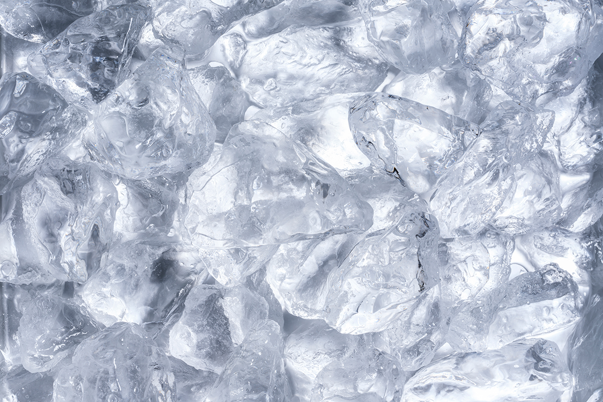
В баре лёд вовсе не второстепенная деталь: он держит температуру, раскрывает аромат и задаёт вкус коктейля. За таким льдом лучшие бары мира обращаются в Канадзаву, к семейной компании, основанной в 1923 году.
История
От лавки со льдом к своему заводу
В бары США, Австралии, Сингапура и других стран из Японии везут лёд. Причём не обычный, а аккуратно выпиленный так, чтобы он точно лёг в бокал. Отправляет его KURAMOTO ICE из Канадзавы, торговец льдом с историей больше ста лет: компанию основали в 1923 году. Заказы приходят от известнейших баров мира, а во главе дела стоит Кадзухико Курамото, пятое поколение семьи.
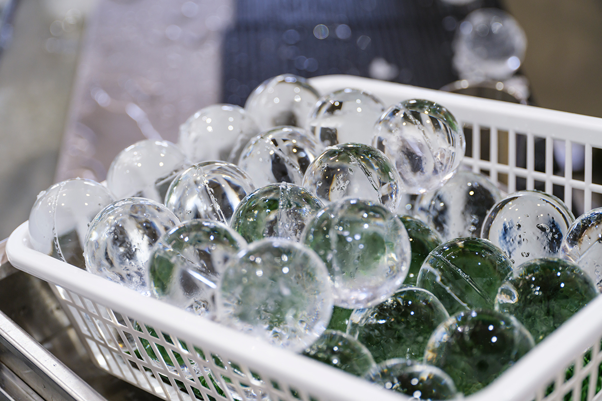
«Лёд нужен не только для того, чтобы охлаждать. Это последний ингредиент, от которого зависит вкус коктейля»
Кадзухико Курамото
Курамото пришёл в семейное дело в 25 лет. Городским торговцам льдом тогда приходилось тяжело: льдогенераторы становились всё лучше, а цены падали. Но кроме тревоги он почувствовал и другое. «Честно говоря, мне показалось, что всё это старомодно», вспоминает он. Отрасль выглядела замкнутой, и ему захотелось превратить её в работу, которой можно гордиться. Компания тогда только закупала лёд и перепродавала его, но ещё со времён деда в семье мечтали делать лёд сами. С приходом Курамото эта мечта наконец сдвинулась с места.
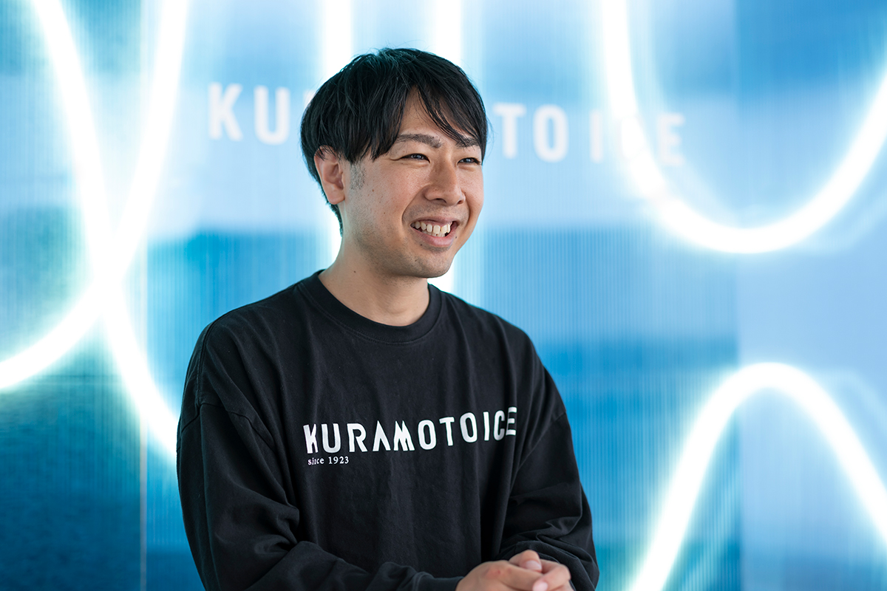
Препятствие оказалось серьёзным: на строительство завода нужно было занять больше 200 млн иен. Для компании с её оборотом это выглядело безрассудством, и вокруг повторяли, что ничего не выйдет. Помогли обстоятельства: ждали открытия скоростной линии Хокурику-синкансэн, у семьи был наследник, а старшие поколения горели этой идеей. Курамото раз за разом ходил в банк и в итоге получил кредит. «В семейном бизнесе много значит, что есть человек, который никуда не сбежит. Наверное, поэтому нам и поверили».
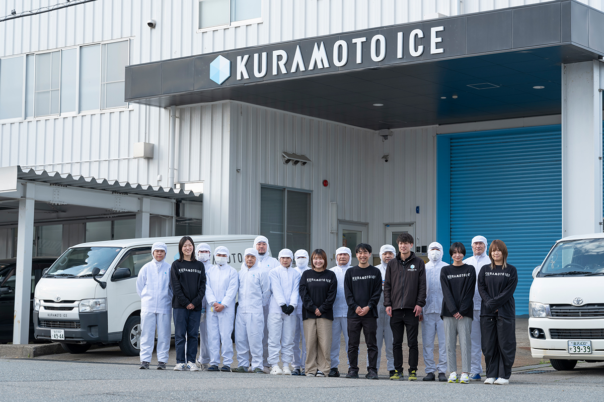
Завод
Как делают прозрачный лёд
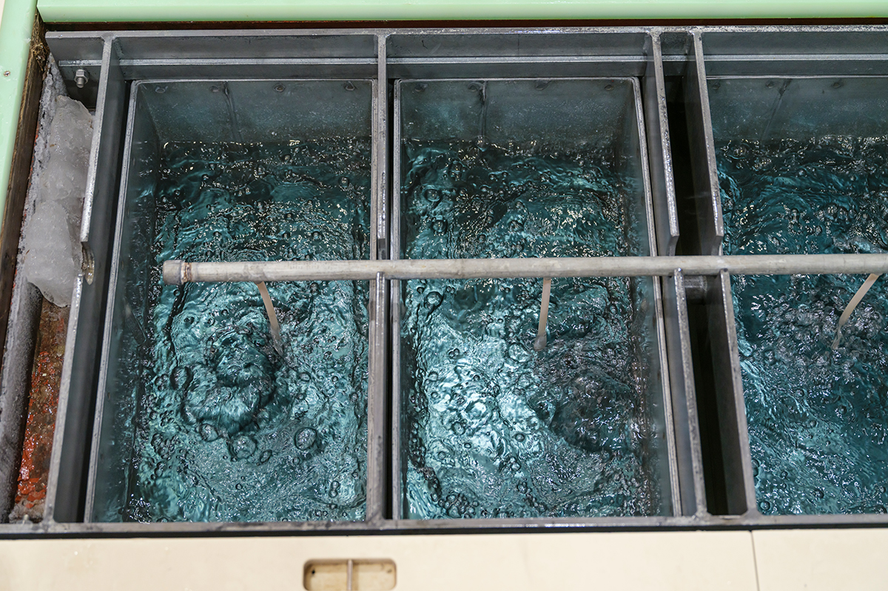
На новом заводе KURAMOTO ICE стала делать то, чего раньше не было: лёд, обработанный специально для коктейлей. Обычно в баре лёд колет, шлифует и придаёт ему форму сам бармен. Компания превратила эту работу в товар. Бару это решает нехватку рук и освобождает бармену время на сами коктейли. Шары, кубы, бруски: длину, толщину и даже углы подгоняют под пожелания каждого бара. В 2026 году в линейке было 55 видов льда.
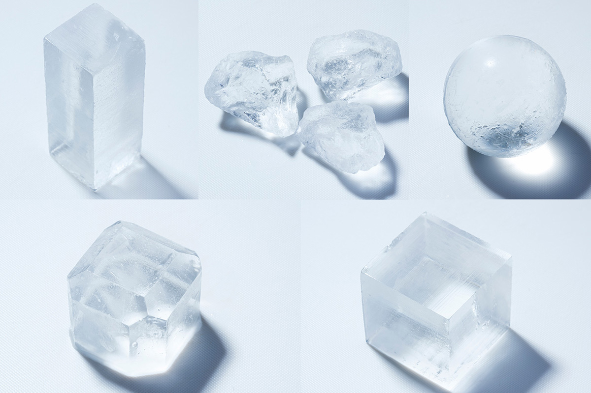
«Привезти лёд и уехать недостаточно. Мы думаем о нём вплоть до момента, когда он окажется в бокале и коктейль будет готов»
Кадзухико Курамото
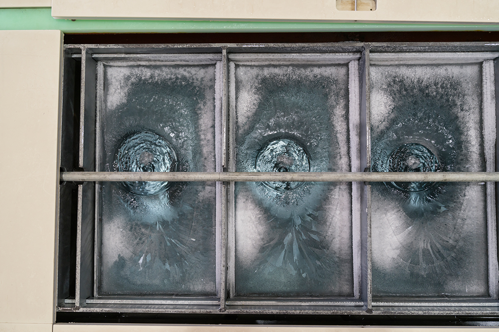
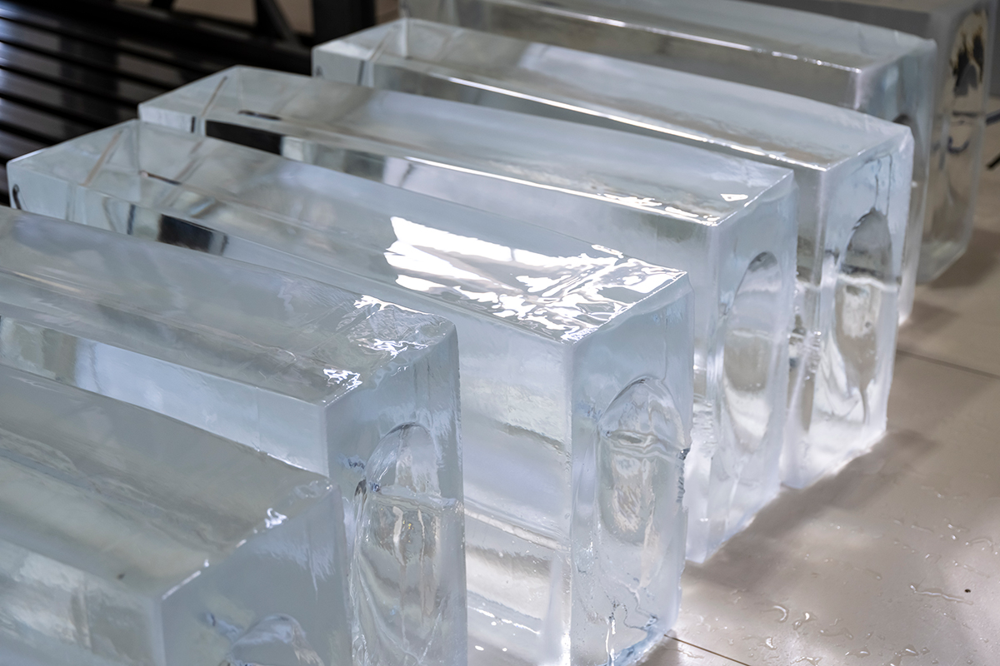
Лёд KURAMOTO ICE поражает прозрачностью. Его замораживают больше 72 часов, всё время перемешивая воду, поэтому в нём не остаётся ни примесей, ни пузырьков, а вкус получается чистым. Но главное, по словам Курамото, то, как лёд тает. Тая, он разбавляет напиток, и от скорости таяния зависит, как раскроется аромат и каким коктейль будет на вкус. Медленно тающий лёд не размывает вкус и долго его держит. Мысль о том, что лёд завершает коктейль, первыми оценили бары за границей.
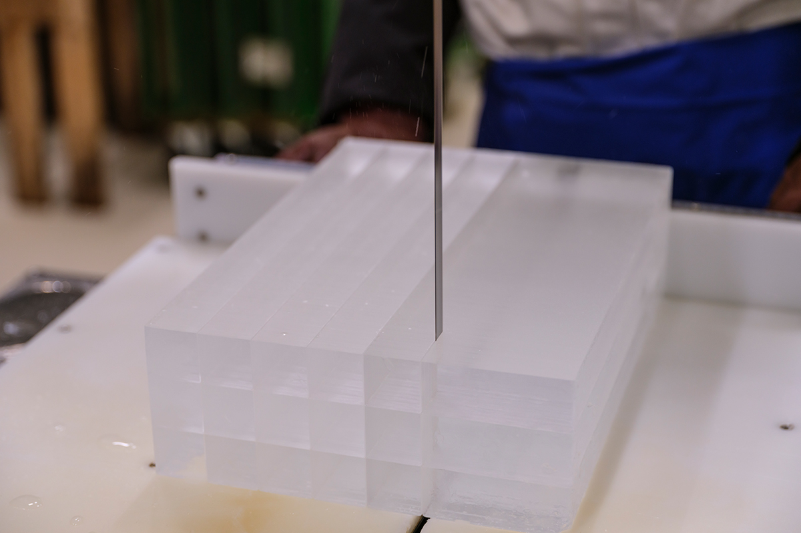
Экспорт
Лёд, который не тает в пути
Перелом наступил в 2017 году, когда компании предложили возить лёд в Америку. Продажи через интернет в Японии тогда почти не шли, и считалось, что лёд по почте не продашь. Но Курамото видел возможности за границей.
«В Японии у баров крепкие связи с местными торговцами льдом, и надёжность поставок ценят выше качества. За границей таких предубеждений нет вовсе»
Кадзухико Курамото
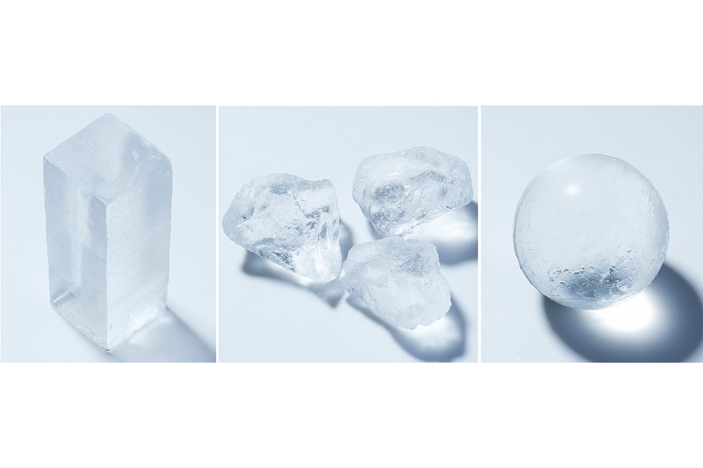
Начинали с малого: небольшие партии отправляли в Америку, подсаживая их в чужие контейнеры. Всё изменил Лас-Вегас. После локдауна, примерно с июня 2020 года, бизнес там ожил одним из первых, и бары города стали брать лёд KURAMOTO ICE. Слухи среди барменов и годы терпеливой работы с клиентами расширили продажи. В 2026 году лёд компании продавался по всем США, занимал большую долю рынка в Мельбурне, а в планах были Ванкувер, Мексика и Гонконг.
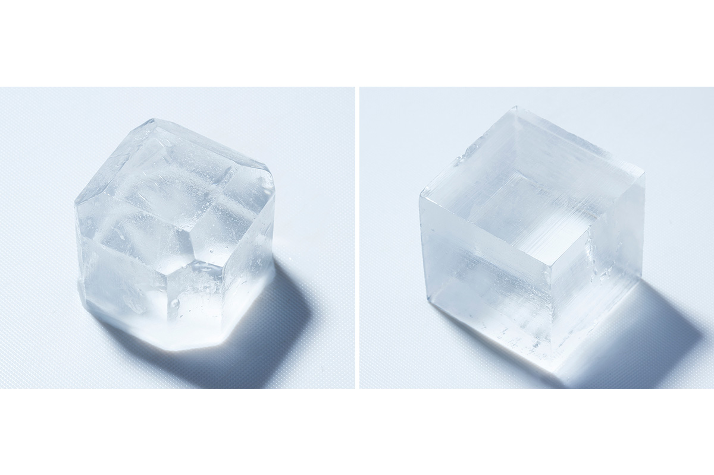
Ещё удивительнее логистика. Лёд, конечно, тает. Но компания досконально изучила температурный режим и упаковку и наладила доставку, при которой он доезжает целым. В 2026 году около 40 % продаж приходилось на заграницу, а в будущем компания рассчитывает на 80 %.
«Мы продумываем всё до того момента, когда лёд пустят в дело. В этом особенность японского производства»
Кадзухико Курамото
В этих словах слышен и характер Канадзавы. Название города, по преданию, происходит от «ручья, где промывали золото». Много воды и мало стихийных бедствий: в таких условиях здесь веками развивались ремёсла и кухня. «Культура доводить мелкую работу до совершенства здесь точно передаётся из поколения в поколение», уверен Курамото. И добавляет: «В течение трёх лет мы станем ведущей маркой мира». Впереди новый завод, а за ним завод за границей. Из городской лавки KURAMOTO ICE выросла в марку, и, может быть, лёд однажды станет поводом приехать в Канадзаву.
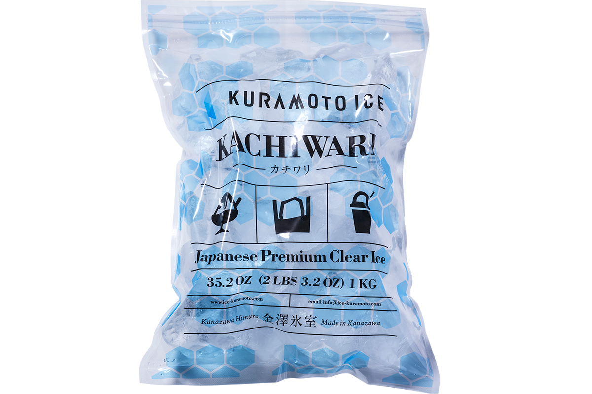
KURAMOTO ICE
- Адрес
- префектура Исикава, Канадзава, Минато, 1-55-27
- Телефон
- +81 76-238-0055
- Сайт
- ice-kuramoto.jp
Какигори
«Цутинокося»: лёд как отдельное блюдо
Попробовать лёд KURAMOTO ICE в Канадзаве можно в двух местах. Первое из них «Цутинокося», кафе какигори, японского десерта из тонко струганного льда. Кафе открылось в 2023 году и принимает гостей только по записи. Какигори здесь собирают из сезонных фруктов, трав, овощей, молочных продуктов и специй, слой за слоем. Когда десерт ставят на стол, все ахают, но красота не единственное его достоинство: вкус меняется с каждой ложкой. Лёгкость и нежность, с которой какигори тает во рту, здесь добиваются именно льдом KURAMOTO ICE.
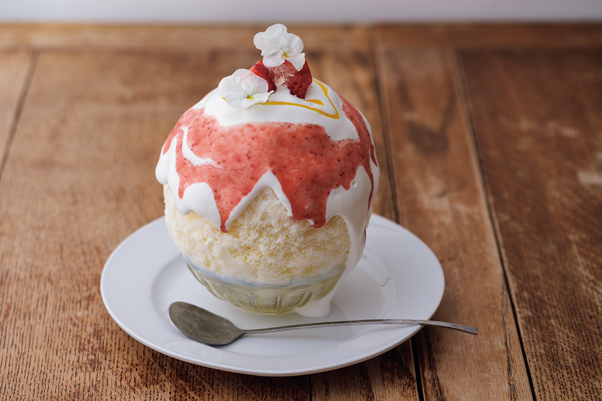
«Если бы лёд KURAMOTO ICE перестал быть доступен, я бы, наверное, закрыла кафе»
хозяйка «Цутинокося»
У «Цутинокося» поклонники по всей Японии, и за словами хозяйки стоят годы работы со льдом. «Когда на выездных мероприятиях я беру лёд другой компании, постоянные гости сразу замечают: сегодня что-то не так. Лёд KURAMOTO ICE стругается с воздухом, лёгкий, как пушистый снег».
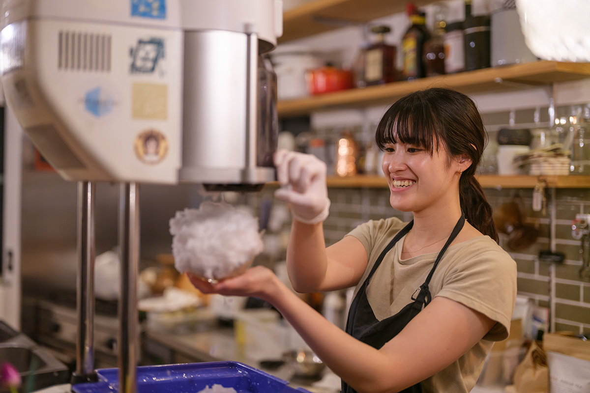
Ещё до открытия кафе она восемь лет почти каждый день стругала лёд KURAMOTO ICE, и чувство льда у неё в руках. Состояние льда сильно зависит от температуры, поэтому хозяйка следит за тем, как его хранят после доставки и как готовят к подаче. Обычная промышленная морозилка держит около минус 20 °C, но такой лёд слишком твёрдый, и нужной текстуры не получится.
«Я храню лёд примерно при минус 10 °C, а перед тем как стругать, держу 15–30 минут в холодильнике. Всё зависит и от сезона, и от влажности, так что в конце решают руки»
хозяйка «Цутинокося»
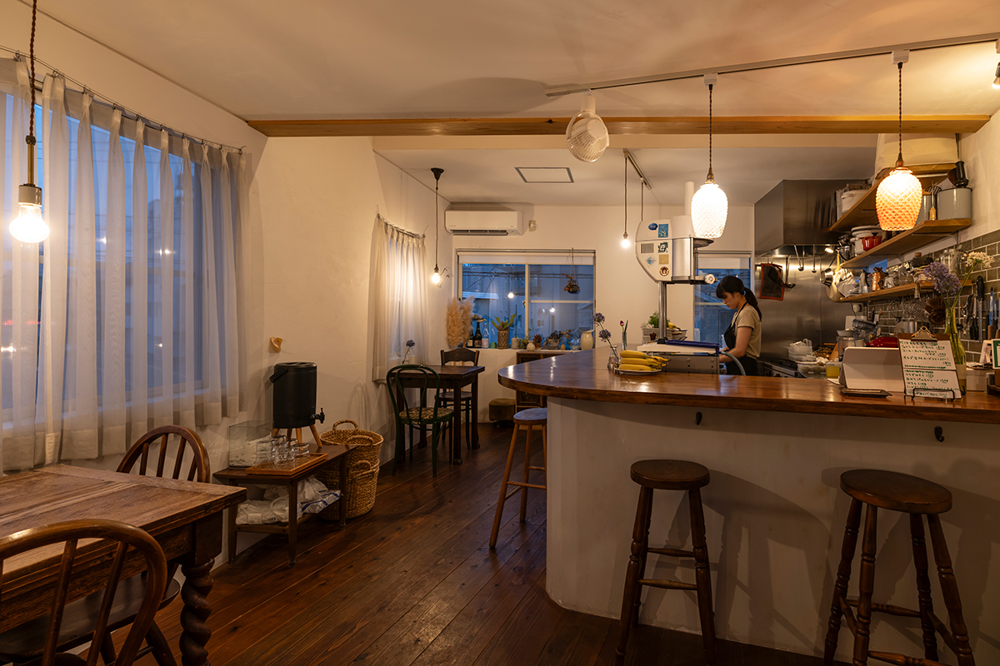
Именно это чутьё позволяет собирать сложные десерты из множества продуктов так, чтобы их было легко доесть до конца.
«Стоит поменять лёд, и меняется всё: и текстура, и то, как он тает»
хозяйка «Цутинокося»
Какигори, если послушать хозяйку, это блюдо из льда.
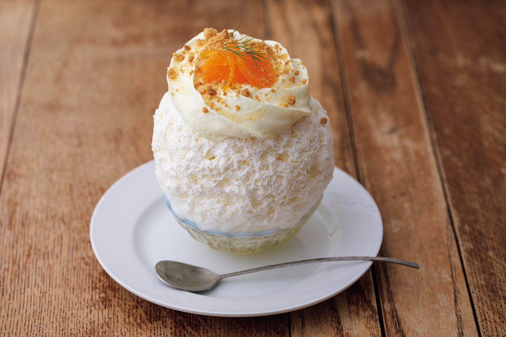
«Цутинокося»
- Адрес
- префектура Исикава, Канадзава, Нанацуя-мати, 1-3
- Телефон
- не публикуется
- Часы работы
- 12:00–17:30, в субботу, воскресенье и праздники 12:00–17:00; только по предварительной записи через Instagram
- Выходные
- нерегулярно
Бар
«Санэйтэй»: пять мест в квартале Хигаси Тяя
Второе место в квартале Хигаси Тяя, старом районе чайных домов, где в ряд стоят традиционные деревянные дома. В глубине его переулков в 2024 году открылся бар «Санэйтэй» всего на пять мест. Его владелец родился в Канадзаве, работал в барах центра города и в главном баре отеля, а потом открыл своё заведение. В коктейлях он рассказывает о родном крае через продукты префектуры Исикава, местное сакэ и чай.
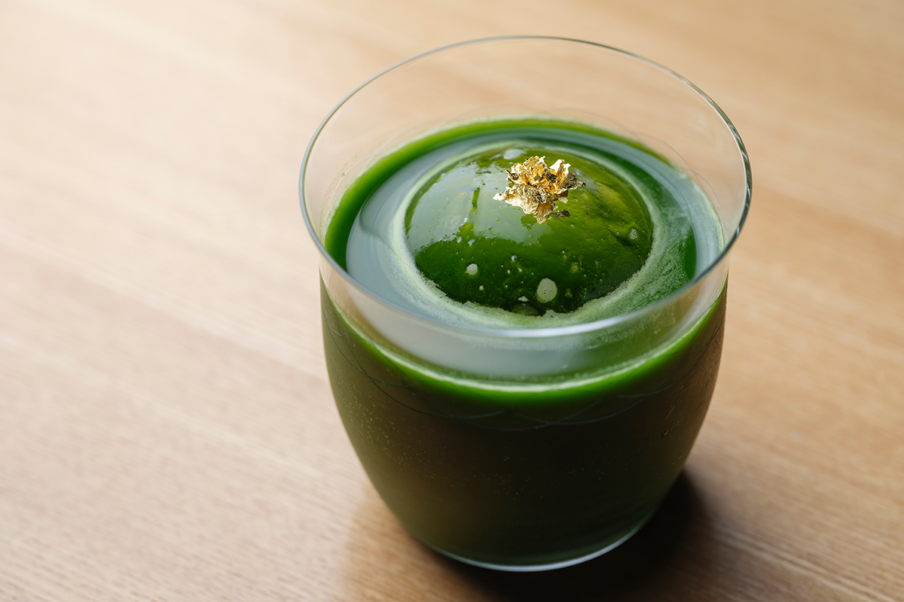
«Когда соединяешь разные продукты, можно показать гораздо больше, чем если подавать каждый по отдельности»
владелец и бармен «Санэйтэй»
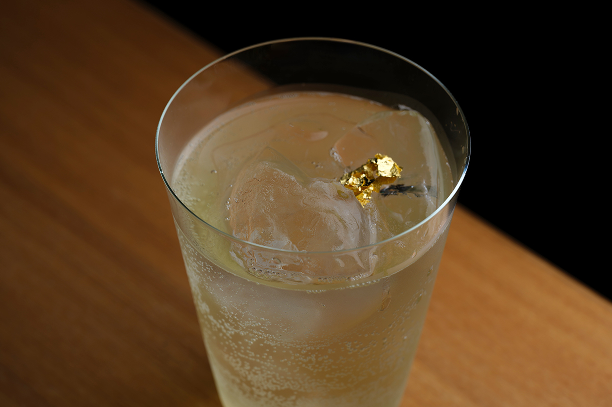
«Лёд для бара как жизненная артерия. Без льда ничего не начнётся»
владелец и бармен «Санэйтэй»
Льду KURAMOTO ICE владелец бара доверяет безоговорочно. Ценность хорошего льда он понял, когда работал в главном баре отеля, сразу после открытия линии Хокурику-синкансэн. Иностранных гостей становилось всё больше, и, попробовав японский лёд, они в один голос удивлялись. «Во многих странах есть только лёд из льдогенератора. Тогда я и понял, какой у нас удивительный лёд».
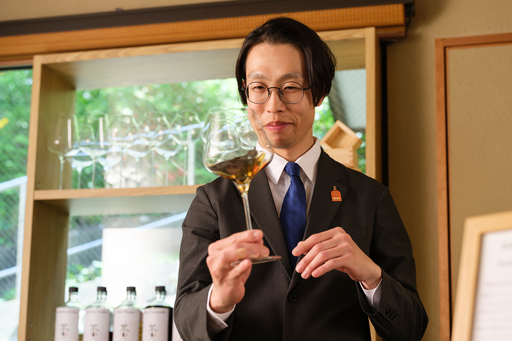
В баре лёд не просто охлаждает. От него зависят температура и крепость коктейля, то, как раскрывается аромат, и даже послевкусие. «Что лёд меняет вкус, я по-настоящему почувствовал со льдом KURAMOTO ICE», говорит владелец. Чистый и твёрдый, он тает медленно и долго сохраняет вкус коктейля. Меняется даже ощущение сладости. Перед открытием «Санэйтэй» устроили сравнительную дегустацию со льдом нескольких компаний, и все участники выбрали KURAMOTO ICE.
«Многим казалось, что с этим льдом коктейль по тому же рецепту слаще»
владелец и бармен «Санэйтэй»
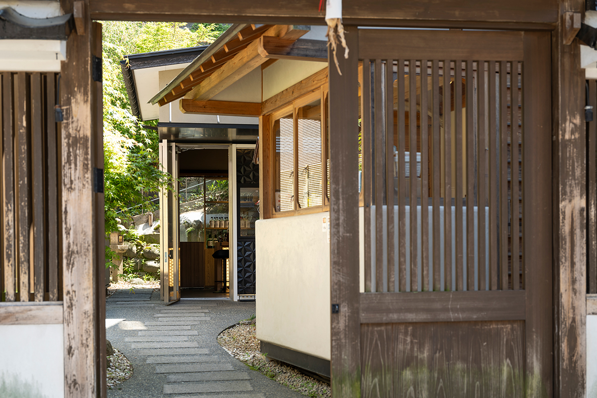
Прозрачный лёд придаёт бокалу блеск и ощущение чистоты и строгости, и многие гости невольно засматриваются на него.
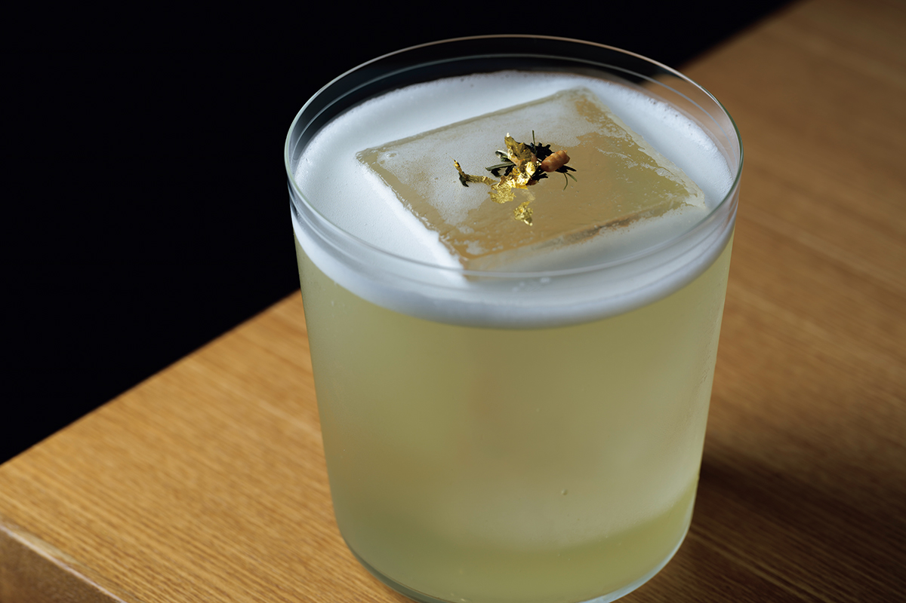
«Лёд не второстепенная деталь, он завершает вкус», говорит владелец бара. Так он и работает: каждый коктейль складывается из характера Канадзавы и её льда.
«Санэйтэй»
- Адрес
- префектура Исикава, Канадзава, Хигасияма, 1-31-15
- Телефон
- +81 80-5855-4659
- Часы работы
- 11:00–14:30, 15:00–20:00; бронирование через Instagram
- Выходные
- нерегулярно
- Сайт
- @_saneitei
Фото: Садахо Найто.